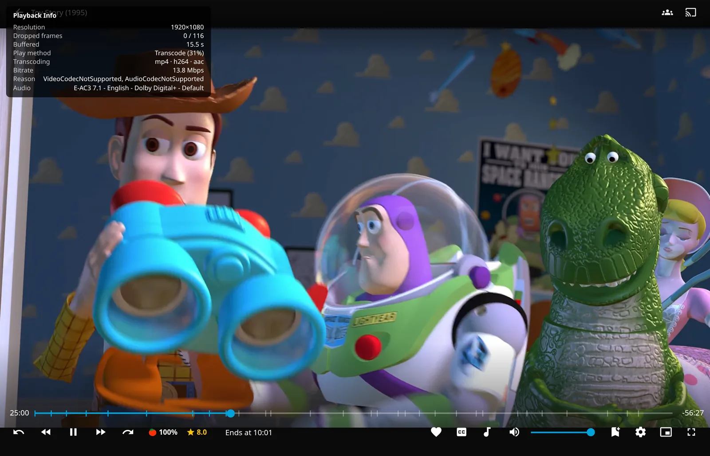
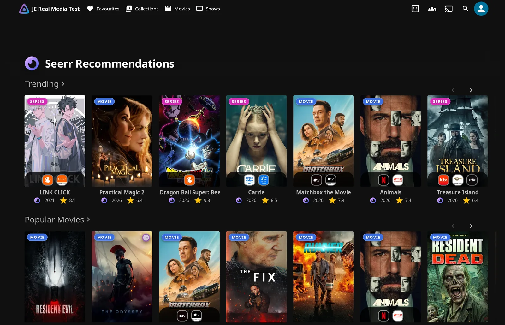
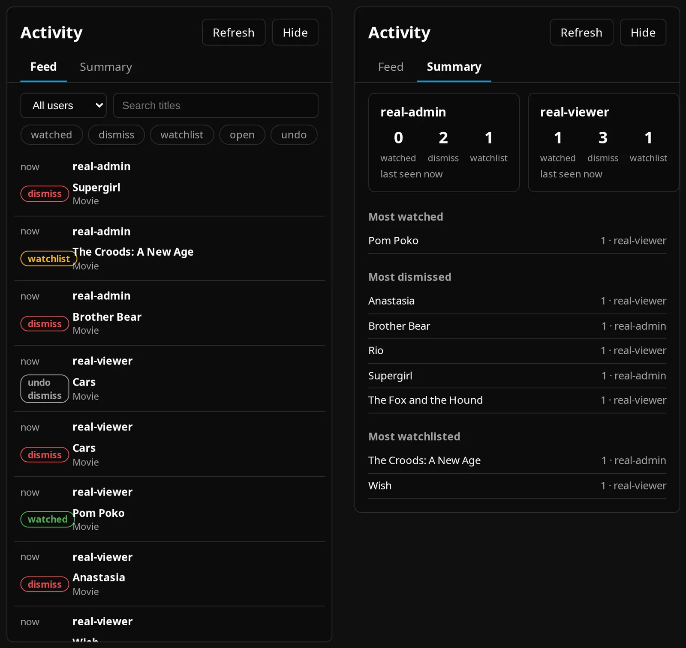

Enhanced Features¶
Use Jellyfin Enhanced's shortcuts, browsing tools, and player controls to make Jellyfin fit the way you watch. You can also catch up on unwatched titles, see server activity, and add information to detail pages.
Client requirements
These controls need a client running JE's injected web scripts. Server-side hidden-content filtering can also affect supported list responses in native clients. See Compatibility.
Open your personal settings:
- Press ? outside a text field to open the Enhanced panel. You can also choose Enhanced Panel under the Jellyfin Enhanced drawer heading, Jellyfin Enhanced in Jellyfin 12's avatar menu, or Jellyfin Enhanced - User Settings in user preferences. During playback in mobile or TV web layouts, use the tune button titled Jellyfin Enhanced when the player controls are available. Desktop layouts hide this button.
- Use Search settings… or select the section named in the feature below. On phones, use the back arrow to return to the section list.
- Close with ×, Esc, or ?.
Open admin settings: Go to Dashboard → Plugins → Jellyfin Enhanced. Tables below show stock defaults for a new installation.
Personal defaults and saving changes
Where an admin setting supplies a personal default, existing users keep their saved choices. Personal settings and shortcut overrides save automatically on the server for each account. Reload another open client to load changes.
See Enhanced Settings and Settings Overview for the default/override workflow, including Overview → Quick Actions → Overwrite everyone's personal settings.
Choose where JE pages appear
Choose either a native Home tab or Custom Tabs; Plugin Pages can coexist with either. Native tabs need no companion plugin and are recommended for Jellyfin 12's experimental layout. Plugin Pages and Custom Tabs require their respective plugins.
Plugin Pages 3.0+ applies integration changes without a server restart. Older versions need a restart after first enabling integration.
Native Home links combine an allocated tab index with jeTab=bookmarks, jeTab=hidden-content, jeTab=activity, or jeTab=catchup. Use JE's generated links rather than a fixed tab number. See JE Pages & Tabs for complete placement instructions.
Header Shortcuts¶
JE shortcuts share a single header row with Jellyfin's controls, so you can reach common actions quickly. Shortcuts that do not fit move into a menu and return as you widen the window.

How to use:
- Click the ••• button, More from Jellyfin Enhanced, to open More from JE.
- Choose a labeled action. On short screens, use Previous page and Next page to see the remaining actions.
- Close with the close button, by choosing an action, clicking outside, or pressing Esc.

There is no separate setting for this automatic layout. Each shortcut follows its feature's availability. Random gets first priority; other enabled shortcuts stay visible while there is room.
Random Button¶
Use the dice button to pick a random title when you cannot decide what to watch. It opens the title's detail page without starting playback.
How to use:
- Open Random Button Settings to choose item types and a source. Keep at least one of Movies and Shows selected.
- Click the dice button or press the stock R shortcut outside the player. Inside the player, R resets playback speed.
Personal settings in Random Button Settings:

| Setting | Default | What it does |
|---|---|---|
| Enable Random Button | On | Shows the dice button. |
| Unwatched Only | Off | Includes unplayed movies/episodes and shows with unplayed episodes. |
| Movies | On | Includes movies. |
| Shows | On | Includes series and, inside playlists/collections, episodes. |
| Use the playlist or collection I'm viewing | Off | Gives the open playlist/collection detail page priority over a pinned source. |
| Everywhere else, pick from | Whole library | Under Random Source, pins an accessible playlist or collection for other pages. This choice is personal only. |
Matching initial defaults are under admin Display → Random Button:
| Setting | Default | What it does |
|---|---|---|
| Enable Random Button | On | Initial button visibility. |
| Show unwatched only | Off | Initial watched-state filter. |
| Include movies | On | Initial movie selection. |
| Include shows | On | Initial show selection. |
| Scope to the current playlist or collection | Off | Starting behavior for the playlist or collection you are viewing. |
How random selection works
JE samples up to 100 randomly ordered candidates, then applies the unwatched filter. Playlists and collections supply only their direct children; the whole-library query includes nested items.
If a pinned source is unavailable or a playlist/collection sample has no eligible titles, JE falls back directly to the library and shows a toast. It bypasses any other pinned source. An empty eligible library sample shows an error. An empty sample does not mean every item in the source is ineligible.
Content Management¶
Keep titles you do not want to see out of your browsing lists, or clear individual home rows without changing your playback progress.
Hidden Content System¶
Hide titles from the browsing lists whose filters you enable. Your hidden list follows your account across devices.
Hiding does not restrict access
You can still open hidden titles directly and play them. “Everywhere” means only the browsing areas whose filters are enabled.
How to hide:
- Ask an administrator to enable Pages → Hidden Content → Enable Hidden Content.
- Open a movie, series, season, or episode detail page and click the open-eye Hide button. Movies, series, and seasons use a standard confirmation. An episode with a known series offers Hide this episode everywhere or Hide entire show everywhere.

If Show in Library Views is on, you can also use card eye buttons. In Continue Watching or Next Up, their choice dialog can limit a hide to that row: Remove from Continue Watching or Hide from Next Up only. These choices are separate from detail-page hiding.

An already-hidden item shows a crossed-out eye; use it to Unhide. After a hide, the Undo toast lasts eight seconds. A new hide replaces the previous toast.
How to manage: Open Hidden Content through its configured entry, or choose Manage Hidden Content in the personal section. The page presents Movies, expandable Series groups, and Cast / Actors.

- Search hidden items… matches item and series names.
- Scoped only shows non-global entries, rather than selecting a particular scope. Badges distinguish Continue Watching only, Next Up only, and Home sections only.
- Expand All / Collapse All opens or closes series groups.
- Unhide restores an entry; Add back to Continue Watching restores a Continue Watching-only entry. Unhide All for This Show clears a series group.
- Unhide All clears the entire list, even if search or Scoped only currently shows a subset.
Personal settings in the Enhanced panel's Hidden Content section start from admin Pages → Hidden Content defaults. The table includes matching admin labels. Button visibility and filtering are separate:
| Setting | Default | What it does |
|---|---|---|
| Enable Content Hiding | On | Enables personal filtering without deleting entries when turned off. Admin: Hidden Content enabled by default. |
| Show Hide Buttons | On | Shows eye buttons; turning it off preserves filtering. Admin: Show "Hide" buttons by default. |
| Show Confirmation Dialog | On | Confirms standard hides. Admin: Show confirmation dialog before hiding. |
| Show on Seerr Items | On | Shows eye buttons on supported Seerr results. Admin: Show "Hide" button on Seerr search results. |
| Show in Library Views | Off | Shows eye buttons on library/home cards. Admin: Show "Hide" button on library / home cards. |
| Show on Detail Pages | On | Shows eye buttons on supported media detail pages. Admin: Show "Hide" button on item details pages. |
| Show on Cast/Actors | Off | Adds hiding on cast cards and person detail pages. Admin: Show "Hide" button on cast / actor cards. |
| Filter Library | On | Filters library lists and supported detail-page lists. Admin: Filter Library & details pages. |
| Filter Search | Off | Filters supported Jellyfin and Seerr search results. Admin: Filter Search results. |
| Filter Continue Watching | On | Filters that home row, including row-specific hides. |
| Filter Next Up | On | Filters that home row, including row-specific hides. |
| Filter Upcoming | On | Filters upcoming episodes. Admin: Filter Upcoming episodes. |
| Filter Recommendations | On | Filters supported suggestions/recommendation results. Admin: Filter Suggestions / recommendations. |
| Filter Discovery | On | Filters JE's Seerr discovery results. |
| Filter Calendar | On | Filters JE's Calendar. |
| Filter Requests | On | Filters JE's Requests page. Admin: Filter Requests page. |
| Hide Collections & Libraries | Off | Experimental: allows hiding My Media libraries, collections, and playlists with library-card buttons enabled, without recursively hiding every child. Admin: Allow hiding collections, libraries, and playlists (experimental). |
Admin settings in Pages → Hidden Content:
| Setting | Default | What it does |
|---|---|---|
| Enable Hidden Content | Off | Loads the full feature, personal section, and management page. |
| Add Hidden Content as a native Home tab | Off | Adds a built-in Home tab; its shortcut is available when the tab button is hidden. |
| Use Plugin Pages for Hidden Content | Off | Adds the page to Plugin Pages. |
| Use Custom Tabs for Hidden Content | Off | Uses a Custom Tabs entry instead of a native tab. |
| Add the Custom Tabs entry for me | Off | Creates/manages the JE-owned entry on save. |
Hidden Content details
Plugin Pages uses /JellyfinEnhanced/hiddenContentPage. For manual Custom Tabs setup, use:
Standard confirmation offers Don't ask again for 15 minutes. This preference is local to your browser and specific to your account. Show Confirmation Dialog controls the persistent preference. Episode/show and home-row choice dialogs still appear when you need to choose an action.
The other filter labels are identical in the personal and admin interfaces. Hidden Content preferences are saved with your per-account list on the server in hidden-content.json, separately from ordinary personal settings. The standalone #/hidden-content route opens only with native Home tab and Custom Tabs placement off and no detected Plugin Pages integration for Hidden Content. See the standalone-route table for navigation conditions.
Cast hiding saves the person as a hidden item; it does not hide every movie or show featuring that person. A series hide can suppress its episodes and seasons through their series ID.
Server filtering also affects clients consuming covered Jellyfin list endpoints, even if they cannot show JE's eye buttons. Native filtering matches Jellyfin item/series IDs; Seerr filtering matches TMDB IDs. A Seerr-only hide does not guarantee hiding a later-added library item.
Calendar filtering also matches normalized names, which can collide. Deleting a library item removes entries for its Jellyfin ID. Home Screen Sections' synthetic discovery/upcoming results are not equivalent to JE's integration results.
Remove from Continue Watching / Next Up¶
Remove an item from a home row while preserving its playback position and watched state. Row-specific hides are stored server-side for your account.

How to use:
- Open an item's ⋯ menu, right-click menu, or long-press/multi-select menu in Continue Watching or Next Up.
- Choose Remove from Continue Watching or Remove from Next Up. Mixed selections from removable rows use Remove; selections from one row use its specific label.

For multiple removable items, confirm the list of titles and rows. A single removable item needs no bulk confirmation.

| Setting | Default | What it does |
|---|---|---|
| Enable "Remove from Continue Watching" — admin Display | Off | Enables server row filtering and supplies the initial personal removal-button default. |
| Add Remove from Continue Watching & Next Up Buttons — personal UI Settings | Off | Adds the menu actions. Turning it off retains earlier hides. |
To restore entries manually, enable the full Hidden Content feature and use its management page: Add back to Continue Watching for Continue Watching-only entries, Unhide for Next Up or combined entries. Confirm with Unhide in the dialog.
Keep removed items out of the row
Lasting filtering needs the server's removal setting or Enable Hidden Content, plus personal Enable Content Hiding and the relevant Filter Continue Watching / Filter Next Up setting.
Row removal and restoration
With both server features off, a personal button can save the hide and remove the current card, but later server responses are not filtered. First-time removal enables personal filtering; existing Hidden Content preferences are retained.
Items outside removable rows are ignored, although a card carrying a playback position can be recognized as Continue Watching. Requests run separately, so a batch can partly succeed. Canceling or total failure preserves the selection. Successful removals also hide empty home sections. Home Screen Sections rows, including its combined Continue Watching/Next Up row, are supported.
Removing the same item from both rows combines the hide; global and already-combined hides are preserved.
Resuming clears a matching Continue Watching-only hide. A combined hide becomes Next Up-only, restoring Continue Watching visibility. Next Up-only and global hides remain until removed manually. Episode playback can also match a hide saved against its series.
Admin: Other Users' Hidden Content¶
As an administrator, you can review and manage other users' hidden lists from the same Hidden Content page.

How to use:
- Select a user from View user's hidden content. The picker appears when another user has hidden entries. My hidden content returns to your own list.
- Choose Edit to restore entries, or Add items to search for titles. Enter at least two characters. In library and Discover distinguish sources.
- Click Hide to add a global hide. Already hidden entries are skipped, preserving the user's existing hide.
- Choose Done to return to read-only mode. Unhide All in edit mode clears the selected user's entire list.
Admin Pages → Hidden Content → Admin Controls:
| Setting | Default | What it does |
|---|---|---|
| Let admins view and manage other users' hidden content | On | Enables both cross-user viewing and editing when Hidden Content is enabled. Turn it off to disable these controls. |
Cross-user access and search
Access is checked server-side. Switching users clears search/scoped filtering and opens a read-only list with Viewing: {userName}.
JE requests up to 24 library matches using the admin's library access and also searches Seerr when available.
Playback & Controls¶
Use shortcuts, bookmarks, and player preferences to make watching more comfortable.
Advanced Keyboard Shortcuts¶
Navigate Jellyfin and control local video playback without opening menus. Admin bindings supply defaults; you can override or disable individual JE actions for your account.
How to use: Press the keys below outside text input fields. To customize them:
- Open Shortcuts in the Enhanced panel.
- Click or focus a binding to show Waiting…, then press a key combination.
- While listening, use Backspace to restore the current admin default, or Del or the disable control to mark the action Disabled. Re-enabling restores the admin default.

| Global action | Stock key | What it does |
|---|---|---|
| Open Search | / | Opens search. |
| Go to Home | Shift+H | Opens Home. |
| Go to Dashboard | D | Opens the dashboard; Jellyfin permissions still apply. |
| Quick Connect | Q | Opens Quick Connect. |
| Play Random Item | R | Opens random item details when the dice button is available. |
| Player action | Stock key | What it does |
|---|---|---|
| Cycle Aspect Ratio | A | Cycles Auto → Cover → Fill. |
| Show Playback Info | I | Toggles JE's statistics overlay. |
| Subtitle Menu | S | Opens the subtitle menu. |
| Cycle Subtitle Tracks | C | Cycles tracks, including Off. |
| Cycle Audio Tracks | V | Cycles audio tracks, without an Off option. |
| Increase Playback Speed | + | Steps up through 0.25×, 0.5×, 0.75×, 1×, 1.25×, 1.5×, 1.75×, and 2×. |
| Decrease Playback Speed | - | Steps down through those speeds. |
| Reset Playback Speed | R | Returns to 1×. |
| Bookmark Current Time | B | Opens Add Bookmark when Bookmarks is enabled. |
| Open Episode Preview | P | Clicks the existing preview button; requires the separate InPlayerEpisodePreview plugin. |
| Skip Intro/Outro | O | Skips the current segment. |
| Step Back One Frame | , | Pauses and seeks back one estimated frame. |
| Step Forward One Frame | . | Pauses and seeks forward one estimated frame. |
| Jump to Last Position | Z | Returns once to the position saved before the last seek. |
| Jump to % of video | 0–9 | Seeks to 0%, 10%, … 90%. Can be disabled but not rebound. |
| Setting | Default | What it does |
|---|---|---|
| Disable Keyboard Shortcuts — admin Keyboard | Off | Disables ordinary JE shortcuts and hides Shortcuts. The ? panel shortcut still works outside text fields. |
| Shortcuts Panel Autoclose Delay (ms) — admin Playback | 15000 | Closes the panel after the configured delay while the pointer is outside it. |
Shortcut behavior and admin bindings
Modifier-only presses are ignored. Conflicts and reserved native player bindings are rejected with a red shake; a dot marks personal overrides. Changes save in your server-side shortcuts.json.
Administrators can set server bindings in Keyboard → Keyboard Config using its recorder, then Save Settings. While recording there, Del disables an action and Backspace restores its stock binding. Existing personal overrides still take precedence.
Held C or V does not repeatedly cycle tracks. Frame stepping uses media frame-rate metadata. When it is missing, JE falls back to 24 fps and shows a notice.
Cycle Aspect Ratio stores Jellyfin's aspect ratio in this browser and adjusts graphical-subtitle canvases. Show Playback Info refreshes the statistics overlay every second while open. Skip Intro/Outro seeks past the segment containing the current position, including other segment types, and falls back to an available native skip button. It is independent of auto-skip settings.
Smart Bookmarks¶
Save moments in a video and return to them from timeline markers or a library-wide page. Your bookmarks are personal and stored on the server.

How to use:
- During playback, press B or click the bookmark-add player button.
- In Add Bookmark, Time is captured when opening begins and is read-only. Enter Label (optional), up to 100 characters.
- Click Add Bookmark to save. Click its timeline marker to jump there. Existing Bookmarks also offers jump and delete controls.
- Open Bookmarks through its navigation entry. Use Movies, Series, or Others; the last group covers items outside Movie/Episode groupings. Click a timestamp/play icon to start there. Edit a time in seconds or
HH:MM:SSand change its label.

Admin Pages → Bookmarks:
| Setting | Default | What it does |
|---|---|---|
| Enable Bookmarks Feature | On | Enables creation, timeline markers, and management. |
| Add Bookmarks as a native Home tab | Off | Adds a built-in Home tab and a shortcut when its tab button is hidden. |
| Use Plugin Pages for Bookmarks Library | Off | Adds the page to Plugin Pages. |
| Use Custom Tabs for Bookmarks | Off | Uses Custom Tabs instead of a native tab. |
| Add the Custom Tabs entry for me | Off | Manages the entry on save. |
Bookmark storage and matching
Plugin Pages uses /JellyfinEnhanced/bookmarksPage. For manual Custom Tabs setup, use:
Your bookmarks are stored in bookmark.json. The standalone #/bookmarks route opens only with native Home tab and Custom Tabs placement off and no detected Plugin Pages integration for Bookmarks. See the standalone-route table for navigation conditions.
Markers for the exact item are cyan. If that item has no exact bookmarks, matching TMDB/TVDB IDs can provide orange fallback markers with File may have changed since bookmark was created.
Episode matching checks saved season/episode identity when present. Legacy records without it can match by provider ID alone. Timestamps are reused without adjusting for different edits of the video.
Merge duplicates, adjust timing, or recover a replaced file
Find Duplicates → Merge to Primary copies matching bookmarks to the first item key in the stored duplicate group. “Primary” is not a detected preferred Jellyfin version. Originals remain; repeated merges can create copies. Episode duplicate/replacement matching preserves available season/episode identity.
On the resulting item, use Adjust Offset, enter positive or negative Time Offset (seconds), then Apply Offset. Only copied records still marked as synchronized are shifted, with times clamped at zero. Successful updates clear their synchronization markers; a zero offset clears markers without shifting times.
For an Orphaned item, use Find Replacement, select a matching library item, then Migrate Bookmarks. Migration moves records and removes the old ones after a successful save. The replacement button needs a saved TMDB ID; matching can also use TVDB. Search checks at most the newest 500 candidates, so an older replacement may not appear.
Failed saves show feedback and roll back changes; a failed migration preserves the original records. Bookmark writes are serialized within the client.
Warning
Individual deletion is immediate. Delete All asks for confirmation and has no undo. Recover replacements before Cleanup Orphaned: cleanup treats failed item lookups as missing, so network or access failures can cause unintended deletion. There is no bookmark export/import control.
Custom Pause Screen¶
After you pause and stop interacting, JE can display artwork and media information over the video.

How to use:
- Enable Custom Pause Screen in Playback Settings.
- Pause and wait for the idle delay. Interaction postpones its appearance; moving the pointer after it appears leaves the overlay visible.
- Press Space / Enter or click/tap the background to resume. × dismisses without resuming and prevents another overlay during that pause.
| Setting | Default | What it does |
|---|---|---|
| Enable Custom Pause Screen — admin Playback → Playback & Tab Switch | On | Supplies the initial personal default. |
| Custom Pause Screen — personal Playback Settings | On | Enables the overlay; reload after changing enablement. |
| Delay before showing (seconds): — personal Playback Settings | 5 | Idle delay while paused; accepts integers from 1–60 and updates the running delay. |
The overlay shows the year, official age rating, runtime, description, elapsed/total time, watched percentage, and estimated Ends at time. See CSS Customization for styling.

Pause-screen artwork and layout
Logo, disc, and blurred backdrop depend on available item/parent/series artwork. A missing logo does not guarantee a text-title fallback. Disc art hides on narrow layouts, can return in short landscape layouts, and stops rotating with reduced-motion preferences.
Smart Playback¶
Manage tab-switch playback, temporary speed boosts, and automatic intro/outro skipping in the browser player.


How to use: Open Playback Settings for tab-switch and hold controls, or Auto-Skip Settings for intros/outros. Admin defaults are under Playback → Playback & Tab Switch and Playback → Auto-Skip.
- For continuous Picture-in-Picture playback, turn off Auto-pause.
- For temporary 2× speed, hold the video background with the left mouse button or touch for 500 ms. Release or cancel to restore the previous speed. Hold only on the video background.
For auto-skip, you need Jellyfin's stored media segments from a provider such as Intro Skipper.

| Setting | Default | What it does |
|---|---|---|
| Auto-pause — personal; Auto-pause on tab switch — admin | On | Pauses playing video when the browser tab is hidden. |
| Auto-resume — personal; Auto-resume on tab switch — admin | Off | Resumes only when JE recorded that it paused on leaving; does not resume a video already paused manually. |
| Auto Picture-in-Picture — personal; Auto Picture-in-Picture on tab switch — admin | Off | Requests PiP when leaving and closes the PiP window JE opened when returning. |
| Long Press for 2x Speed (β) — personal; Long press/hold for 2x speed β — admin | Off | Temporarily boosts speed while holding. Reload after first enabling. |
| Automatically Skip Intro — personal; Auto-skip Intro — admin | Off | Seeks to the end of stored Intro segments. |
| Automatically Skip Outro — personal; Auto-skip Outro — admin | Off | Seeks to the end of stored Outro segments. |
Playback behavior and limits
Picture-in-Picture: Auto-pause pauses playing video when the document is hidden. Auto-pause and PiP can run on the same visibility change. PiP needs browser support, loaded video metadata, and browser permission/activation. A request can be refused. Edge/Chrome may open their own automatic PiP; JE closes only the window it opened itself.
Temporary 2× speed: A speed indicator appears during the boost. Activation on a paused video attempts playback. Moving more than ten pixels before activation cancels the pending hold. OSD controls and the pause overlay are excluded, but the Enhanced panel is not reliably excluded.
Auto-skip: JE seeks to the exact stored segment end. It does not depend on an English button label or require Jellyfin's segment action to display a skip button. Segments need start/end boundaries and must last at least one second.
Seeking back inside a segment just skipped leaves you there. Seek before its start and play through it to skip again. Recap, Preview, and Commercial actions remain Jellyfin's responsibility; JE's automatic toggles cover only intros/outros. Outro skipping does not implement a separate auto-next feature; Jellyfin controls next-episode autoplay.
Failed segment retrieval or ambiguous playing-item identity can leave skipping inactive. Jellyfin stores segments per item, so multiple versions with different timings can use boundaries from the primary version.
Auto-skip uses a local seek
Direct play/direct stream and HLS are suitable. Progressive transcoding can stall beyond produced data, and SyncPlay peers do not follow this local seek.
Customizable Subtitles¶
Style text subtitles with presets, colors, effects, and a live position preview. These preferences do not change Jellyfin's saved subtitle appearance settings.
How to use:
- During playback, open Subtitle Settings.
- Choose presets or edit Text / Background, and preview the result. Changes apply to supported text tracks.
- For positioning, set Jellyfin's Subtitle styling to Custom in user subtitle preferences, then click or drag the Position grid.

Personal Subtitle Settings, with initial defaults from admin Playback → Subtitles:

| Setting | Default | What it does |
|---|---|---|
| Style | Clean White | Sets preset text/background colors; admin Default Subtitle Style. |
| Size | Normal | Selects size; admin Default Subtitle Size. |
| Font | Default | Selects font; admin Default Subtitle Font. |
| Text Effect | Auto | Selects shadow/outline; admin Default Subtitle Text Effect. Auto uses a shadow with the transparent preset or #00000000; a visible box, including a semi-transparent one, has no Auto shadow. |
| Text | White, #FFFFFFFF |
Custom text color/alpha. |
| Background | Transparent, #00000000 |
Custom background color/alpha. |
| Position | Horizontal 50%, vertical 85% for server-created settings | Places the stack's lower edge; grid range is 2–98% on both axes. |
| Disable Custom Styles | Off | Leaves styling to Jellyfin after reload; admin Disable Custom Subtitle Styles by default. |
- Style: Clean White, Classic Black Box, Netflix Style, Cinema Yellow, Soft Gray, High Contrast.
- Size: Tiny, Small, Normal, Large, Extra Large, Gigantic.
- Font: Default, Noto Sans, Sans Serif, Typewriter, Roboto (Roboto Mono).
- Text Effect: Auto, None, Shadow, Outline, Outline + Shadow.
For white text on a semi-transparent black box like the example below, set Text to #FFFFFFFF and Background to #00000080. The last two digits set opacity.

To stop styling, turn on personal Disable Custom Styles and reload. To change the starting preference for everyone, save admin Disable Custom Subtitle Styles by default. Use Overwrite everyone's personal settings only if you intend to replace existing personal preferences.
Choose a supported text track
ASS / SSA, PGS, VobSub / DVD, DVB bitmap, and burned-in subtitles do not pass through the text element JE can restyle. Choose a text track such as SRT if you need these controls.
Subtitle colors, positioning, and support checks
Color alpha spans 0–255 using #RRGGBBAA. Editing colors enables custom colors. Choosing Style replaces both colors and returns to preset colors. Clean White stores its preset background as transparent. JE's custom text styling resets weight, italics, small-caps, and primary-track margins.
The position grid's client fallback and reset use (50,95).
| Renderer | Supported styling |
|---|---|
| Jellyfin custom text element | Color, background, size, font, effect, and position. Primary/secondary tracks share a position and stack together. |
| Browser native captions | Color, background, size, font, and effect. No position grid, custom padding, or rounded box. |
The panel checks format when opened, using the first controllable session with a playing item and its primary subtitle stream. Reopen after changing tracks. It may reflect another session or miss a secondary track, so no warning is not proof of support.
Player Ratings¶
See Jellyfin's community/critic scores in the player or briefly show age-rating information when playback starts. These are admin controls, independent of poster-tag switches.
How to use: Start playback to see the optional startup badge; reveal the player controls to see score chips beside the time information.
Admin Display → Media Tags and Playback → Playback & Tab Switch, respectively:
| Setting | Default | What it does |
|---|---|---|
| Show Rating in Video Player | On | Adds community/critic score chips to the player controls using Jellyfin rating fields. |
| Show Age Rating When Playback Starts | Off | Shows official age rating, up to three recognized advisory tags, and up to three genres for five seconds. |
Rating metadata and visibility
Available metadata determines what appears. Episodes can use series data for missing age rating/genres and incorporate series advisory tags. These controls have no personal-panel toggle. Spoiler Guard can suppress protected information.
Discovery & Integration¶
Find missing media through connected services, share reviews, and see what others are watching.
Seerr Search Integration¶
Search and request missing media from Jellyfin with Seerr.
How to use:
- Turn on admin Seerr → Enable Seerr integration (off by default).
- Configure and Test the connection, then link/import users.

Follow Seerr Features, Seerr Settings, and Permission Audit for requirements, search, request permissions, quotas, and watchlist options.
Existing setup illustrations
 Illustrative external settings capture; its version is unknown. Its annotations do not establish JE's current account-import requirements.
Illustrative external settings capture; its version is unknown. Its annotations do not establish JE's current account-import requirements.
These external icon illustrations show active, unlinked-user, and disabled styling. JE loads its own icons through its asset service; an active connection still requires request permission for request actions.


Seerr Item Details¶
Seerr adds similar/recommended rows, discovery, request actions, and a More Info modal. You can control these features separately.
How to use: See Seerr Features and Seerr Settings for detail-page controls, collection discovery, exclusions, the standalone Recommendations page, and setup.


.arr Links Integration¶
As an administrator, you can open matched titles in Sonarr, Radarr, or Bazarr. Synced Jellyfin tag links are a separate feature.
How to use: See *arr Features and *arr Settings for service setup, multiple instances, status badges, tag filters, and synchronization tasks.

Streaming Provider Lookup¶
Elsewhere shows subscription streaming providers for a title in your region, including supported per-season lookups.
How to use:
- An administrator configures Enable Elsewhere and TMDB API Key under Elsewhere & Reviews.
- Choose regions/providers in a title's Elsewhere controls.
See Elsewhere & Reviews Features and Elsewhere & Reviews Settings for defaults and limits.

User Reviews¶
Share text reviews and star ratings for movies, series, seasons, and episodes with viewers on your server. See User Reviews for writing and moderation, and User Reviews settings for author visibility, poster averages, and Jellyfin rating mirroring.
Activity Feed¶
See recently watched, favorited, and reviewed titles across the server, with an optional live session section.

How to use:
- Open Activity through the configured Home tab or Plugin Pages entry.
- Click titles/artwork to open details, or read stars/text previews. Watch History shows progress for partial watches and completed watching for completed ones. Favorites and reviews share the Reviews section.
- Use Refresh for an update.
Admin Pages → Activity Feed:
| Setting | Default | What it does |
|---|---|---|
| Enable Activity Feed | Off | Enables the page and watched/favorite collection. |
| Show recently watched | On | Records and shows qualifying playback stops. |
| Show recently favorited | On | Records and shows favorites. |
| Show recently reviewed | On | Includes current review-store entries. |
| Non-admins only see their own activity | Off | Regular users only see their own watched, favorited and reviewed entries; administrators still see everyone. |
| Show Active Streams section | On | Adds live sessions when Active Streams is enabled and the viewer is allowed. |
| Add Activity as a native Home tab | Off | Adds a built-in Home tab. |
| Use Plugin Pages | Off | Adds the page to Plugin Pages. |
| Use Custom Tabs | Off | Uses Custom Tabs instead of a native tab. |
| Add the Custom Tabs entry for me | Off | Manages the entry on save. |
The live section also requires admin Extras → UI Tweaks → Active Streams Header Widget. Non-admins need Show widget to non-admins.
Activity collection, access, and refresh
Plugin Pages uses /JellyfinEnhanced/activityPage. For manual Custom Tabs setup, use:
Watch History includes playback stopped at a position of at least 5% of known runtime, plus playback Jellyfin marks completed. This measures position, not time spent watching.
Only the live section polls every 15 seconds while visible, skipping hidden browser tabs. Stored history/review/favorite entries respect viewer library access and the review-author filters, with admin/self author exceptions. Live sessions use the separate Active Streams permission policy and can include titles outside the viewer's library access.
A standard feed request returns up to 50 merged entries without UI pagination. Watched/favorite storage in activity.json is capped at 500 entries, one per user/item/type. Rewatches update time while preserving highest progress and completion. Unfavoriting removes its entry.
Turning the feed off hides it and stops watched/favorite collection without deleting history. User Reviews continues independently, so reviews written while the feed is off can appear after re-enabling it.
Catch Up¶
Sort unwatched movies and shows with a card deck. Touch, mouse, and keyboard actions update your own Jellyfin account.
How to use:
- Open Catch Up through the configured Home tab or Plugin Pages entry.
- Choose Movies or Shows.
- Use the gestures or keys below to sort your deck.
| Gesture/control | Keyboard | What it does |
|---|---|---|
| Swipe right | Right | Marks watched. |
| Swipe left | Left | Dismisses from your deck in this browser. |
| Swipe up | Up | Adds to your watchlist using Jellyfin's Likes flag. |
| Swipe down | Down | Opens details. |
| Rewind (Backspace) | Backspace / Z | Reverses the last watched, dismiss, or watchlist action in the current deck. |
For a show with at least two regular seasons, swiping right opens a season picker. Selecting a later season selects earlier ones; select a selected season again to untick just that season. Choose Mark {n} season(s) watched to confirm. Specials are not listed. Fewer regular seasons mark the whole series directly.

Admin Pages → Catch Up:
| Setting | Default | What it does |
|---|---|---|
| Enable Catch Up | Off | Enables the deck page. |
| Record Catch Up activity | On | Records new actions when Catch Up is enabled; turning it off retains readable history and the admin panel. |
| Add Catch Up as a native Home tab | Off | Adds a built-in Home tab. |
| Use Plugin Pages | Off | Adds the page to Plugin Pages. |
| Use Custom Tabs | Off | Uses Custom Tabs instead of a native tab. |
| Add the Custom Tabs entry for me | Off | Manages the entry on save. |
Rewind does not restore earlier ratings or watched state
Rewind reverses the action rather than restoring a saved snapshot. It does not preserve previous watched/liked/disliked state. A failed action can still remove the card and show Failed: {error}; rewind can also fail.
Deck selection, browser preferences, and rewind
Plugin Pages uses /JellyfinEnhanced/catchUpPage. For manual Custom Tabs setup, use:
Decks use random batches of 40 unwatched accessible items, filtering dismissed, already-seen, and imageless cards. Nothing more to show here. can mean the sample yielded no new eligible cards.
Dismissals and the Movies/Shows choice are browser-local per-user preferences, separate from Hidden Content. Reloading retains dismissals; rewind or clearing the relevant browser storage removes them. Switching/restarting a deck clears its queue, seen set, and undo history.
The swipe-up Likes flag is the watchlist flag used by Seerr watchlist sync. Swiping down does not add an undo-history entry. Selecting all regular seasons writes the series ID; a subset writes selected season IDs.
Watched undo removes PlayedItems state, and watchlist undo removes the Likes rating.
For administrators:
- Open Activity, then Feed or Summary.
- In Feed, choose All users or a user, select action chips, or enter Search titles. No selected action chips means all actions. The feed shows up to 300 matching events.
- Use Refresh or Hide to update or close the panel.


Catch Up admin activity
Summary counts distinct successful user/title actions after corresponding recorded undos. Most watched, Most dismissed, and Most watchlisted each show up to 15 titles. Feed filters do not affect Summary.
The open panel refreshes every ten seconds. It docks beside the deck at widths of at least 1100 pixels and opens as a modal on narrower screens. Non-admins cannot read these endpoints.
Logs include open, undo, and failed actions. They are client reports, not proof of viewing. Item names are resolved server-side. catchup-log.jsonl is bounded to about 5 MB per file with two files retained.
TMDB Reviews¶
Read TMDB reviews alongside local reviews on movie and series detail pages. See TMDB Reviews for setup, expansion, ordering, and fetching limits.
Visual Enhancements¶
Add quality, genre, language, score, age-rating, and people information to cards with optional tags. All six tag families start off; detail-page information and awards are independent features.
How to use: See Tags for controls, prerequisites, caches, styles, native poster rendering, and audio-language tag synchronization.
 This example enables all poster tag groups.
This example enables all poster tag groups.
Watch Progress¶
See how much you have watched on a title's detail page. You can check movies, series, seasons, episodes, collections, and playlists.
How to use:
- Enable Show Watch Progress in UI Settings.
- Open details and click the progress chip to cycle Percentage → Time Watched → Time Remaining. The selected mode saves for your account.
| Setting | Default | What it does |
|---|---|---|
| Show watch progress — admin Display; Show Watch Progress — personal UI Settings | Off | Shows the detail-page chip. |
| Watch Progress Default — admin Display | Percentage | Initial mode: Percentage, Time Watched, or Time Remaining; personal choices are in UI Settings. |
| Watch Progress Time Format — admin Display | h:m | Initial duration format; personal h:m / y d:h:m choices are in UI Settings. d:h:m choices are in UI Settings. |
Watch-progress calculation
For containers, progress adds together accessible leaf items. It depends on runtime metadata and ignores media-version selection.
File Size and Audio Languages¶
See total file size and available audio languages in a title's detail information. These controls are independent of poster tags.

How to use:
- Open UI Settings and enable the chip you want.
- Open a detail page. Selecting another media version changes its size and audio-language data.
| Setting | Default | What it does |
|---|---|---|
| Show file sizes — admin Display; Show File Sizes — personal UI Settings | Off | Shows total file size. |
| Show available audio languages on item detail page — admin Display; Show Audio Languages — personal UI Settings | On | Shows detail-page audio-language chips. |
Supported items and audio-language links
File size supports movies, series, seasons, episodes, collections, and playlists. Container sizes add together accessible leaf items. Audio languages supports movies, series, seasons, and episodes. Missing usable values display a dash.
When audio-language tag synchronization/linking is configured, a chip can open its matching Jellyfin tag page: regional tag first, base-language tag second, otherwise plain text. See Tags for that separate admin setup and task.
Release and Air Dates¶
See movie cinema, digital, and physical release dates or television air dates beside the item's metadata. See Release Dates for setup, region fallback, and date-selection rules.
Awards¶
Expand an awards banner on detail pages to see Wikidata wins and nominations with categories, years, and recipients.

How to use:
- Enable Show Awards Banner in admin Display → Awards, save, and reload.
- Click the banner to expand it. Reviews do not need to be enabled.
Admin Display → Awards:
| Setting | Default | What it does |
|---|---|---|
| Show Awards Banner | Off | Enables Wikidata award lookups and display. |
Award sources, grouping, and caching
Movies and people use their own TMDB identity. Series use their series identity; seasons/episodes show their parent series' awards.
Entries sort newest year first, with wins before nominations within a year. Redundant nominations for a winning category/year are merged with recipients/work. Totals therefore count grouped entries rather than raw statements.
Wikidata coverage varies and is not exhaustive. No banner may mean no data or a failed lookup. The server's awards.json caches successful results for 180 days, confirmed empty results for 30 days, and failures for one hour.
Personal Scripts¶
These optional extras are bundled with Jellyfin Enhanced, so you do not need a separate script installation. Despite this section's name, they are server switches.
How to use: As an administrator, enable them under Extras → UI Tweaks, save, and reload. See Other Features and Other Settings for the broader extras guide.
Active Streams Widget¶
Check playing and paused sessions from the header, and send a broadcast message as an administrator. See Active Streams Widget for setup, session details, refresh behavior, non-admin access, and broadcasts.
Colored Activity Icons¶
Add predefined colors and icons to the Activity list on Jellyfin's dashboard home to make events easier to scan.

How to use: Enable Colored Dashboard Icons, save/reload, and open the dashboard.
| Setting | Default | What it does |
|---|---|---|
| Colored Dashboard Icons — admin Extras → UI Tweaks | Off | Styles supported dashboard events. |
Dashboard icon limits
Unmatched events keep their existing appearance. There is no color editor. This feature is separate from JE's Activity Feed.
Colored Ratings¶
Color official parental/age classifications on detail pages, including supported international boards, US TV descriptors, and ESRB labels.

How to use: Enable Colored Ratings Backgrounds, save/reload, and open a classified title.
| Setting | Default | What it does |
|---|---|---|
| Colored Ratings Backgrounds — admin Extras → UI Tweaks | Off | Applies predefined classification colors. |
Classification colors
The capture shows colored G, PG-13, and R badges on Toy Story, The Dark Knight, and Oppenheimer detail pages. Supported classifications extend beyond these examples. This feature does not style numeric review scores.
Login Image Display¶
Show a public user's avatar above the password field on the manual-login form. When the avatar is available, the name input is visually hidden.

How to use:
- Enable Profile Picture on Login.
- Select a public user on the login page, or enter a name matching an existing public user card.
| Setting | Default | What it does |
|---|---|---|
| Profile Picture on Login — admin Extras → UI Tweaks | Off | Adds the avatar to the manual-login form. |
When no avatar appears
No matching card/image or an image-load failure leaves or restores the name input. This does not discover hidden accounts through another lookup.
Plugin Icons¶
Add Material icons and image logos to supported dashboard plugin links, plus optional links to other configuration pages.
How to use:
- Enable Custom Plugin Menu Icons and save/reload.
- For additional links, fill in Sidebar Custom Links using the format below.
- Use Test Links to preview temporary sidebar entries until refresh. Save Settings persists them.

| Setting | Default | What it does |
|---|---|---|
| Custom Plugin Menu Icons — admin Extras → UI Tweaks | Off | Enables bundled plugin icon mappings and custom links. |
| Sidebar Custom Links — admin Extras → External Links | Empty | Adds configuration-page links using the format below. |
Custom sidebar link format
Enter one decoded exact configuration-page name and Material icon per line, for example:
Preview requires the icon script to have initialized after enabling it.
See Other Features for supported plugin mappings.
Theme Selector¶
Choose a Jellyfish color variant from the Theme row in Jellyfin user preferences.
Jellyfish installation required
Jellyfish must be installed natively. The admin guidance excludes the KefinTweaks installation method.

How to use:
- After an administrator enables the selector, open Jellyfin user preferences.
- Select a variant. Selection fades and reloads the page. Default removes the variant override.
- To enable Daily, click the shuffle button titled Random daily theme.
| Setting | Default | What it does |
|---|---|---|
| Theme Selector (Jellyfish) — admin Extras → UI Tweaks | Off | Adds the Theme row. |
| Random daily theme — user preferences Theme | Off | Enables daily variant selection. |
Theme storage and daily timing
Variant/daily choices are stored per user in this browser, rather than in server-synced Enhanced settings. Daily mode chooses a variant during initialization when the saved UTC calendar date differs. It is not a midnight timer.
Customization¶
Adjust Jellyfin's appearance and choose the language for JE's interface.
Custom Styling with CSS¶
Customize the pause screen, Enhanced panel, player score chips, tag overlays, and synced *arr tag links with Jellyfin custom CSS.
How to use: See CSS Customization for selectors and examples, and Tags for JE's built-in Tag Styles controls.
Custom Branding¶
Replace Jellyfin's logos, banners, favicon, and touch icon with your own uploads, or show your logo during startup. See Custom Branding for uploads and storage, Splash Screen for the loading overlay, and branding settings for asset slots and filenames.
Internationalization¶
Open Language Settings → Display Language and choose a language or Auto; your choice saves and reloads the page. Use Clear Translation Cache in the same section to clear this browser's translations and reload. See Internationalization for language precedence, loading, and server invalidation, and language settings for defaults.